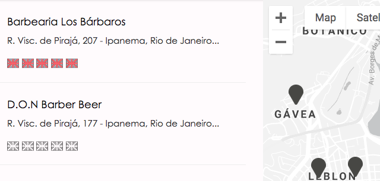
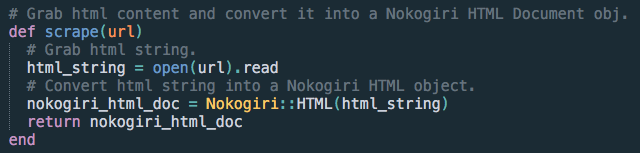
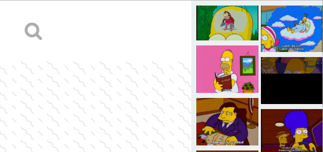
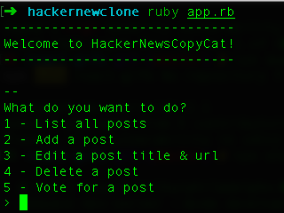
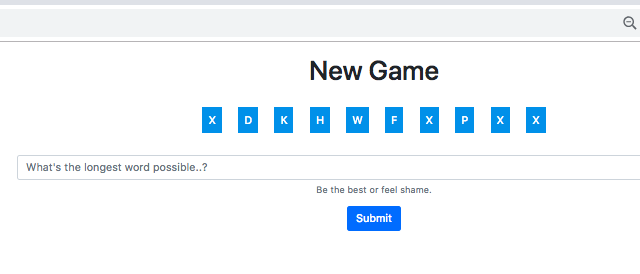
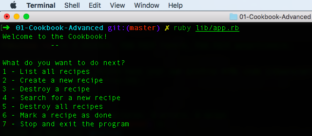

|  |
Polyglot
My final project from the Le Wagon Coding Bootcamp, a Ruby on Rails Web App developed in 2 weeks with the help of 3 other developers: Eleonora Kiziv (Russia), Steve Knight (England) e Sachi Saito (Japan). It's a platform where tourists can rate the English speaking capabilities of the services they use in Brazil (a real problem for foreigners). The Google Places API was used combined with the Google Maps API to find and pinpoint the services.
|
|  |
Aliexpress Scraper
Software written in Ruby to help drop shippers select their products. The user chooses a category on Aliexpress and runs the code, the output will be a CSV file with the all the products's information (name, cost, quantity in stock, shipping options, etc).
|
|  |
React Gifs
This project was created to learn React JS (understand the components and how they interact with each other without Redux). The user searches for a gif on the search bar, the Giphy APIis called and updates the sidebar with a list of gifs based on the user’s input. The user can then click on any gif on the side bar and it will update the main gif displayed at the center of the page.
|
|  |
Hacker News Clone
Terminal based HackerNews clone. Written in pure Ruby and SQL, this project was created to learn the MVC architectural pattern. The user can list posts, create, delete and vote for a post.
|
|  |
Longest Word Game
Written in Ruby, Javascript, HTML and CSS. The user tries to come up with the longest word based on the random letters that appear on the screen. The Wagon Dictionary API is called to validate the word. The faster the response and the larger the word is, the higher the score.
|
|  |
Cookbook
A simple cookbook written in Ruby and SQL, built to put in practice the fundamentals of CRUD and object oriented programming. The user can: list, create, view, update and delete recipes.
|
Arthur Philadelpho is a self-taught full stack software developer. After coding as a hobby for 5 years, he decided to pursue his passion and have a career in software development. In his spare time, Arthur practices calisthenics.